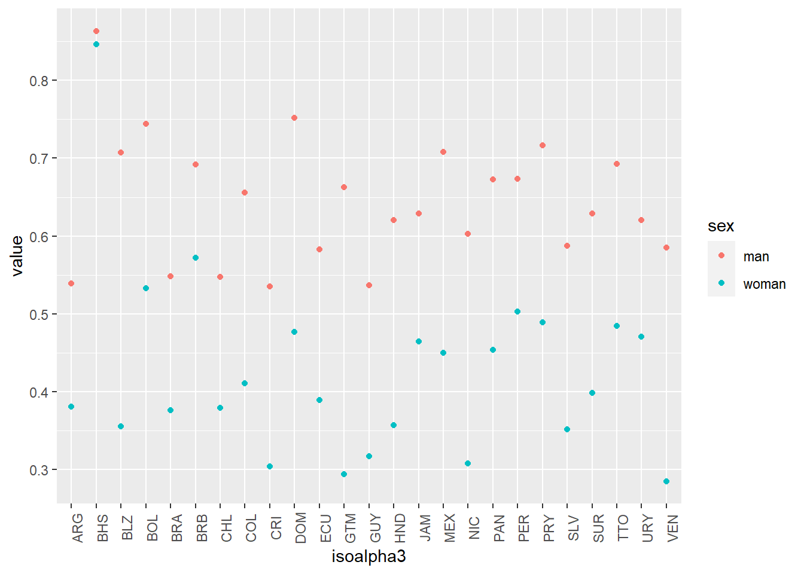
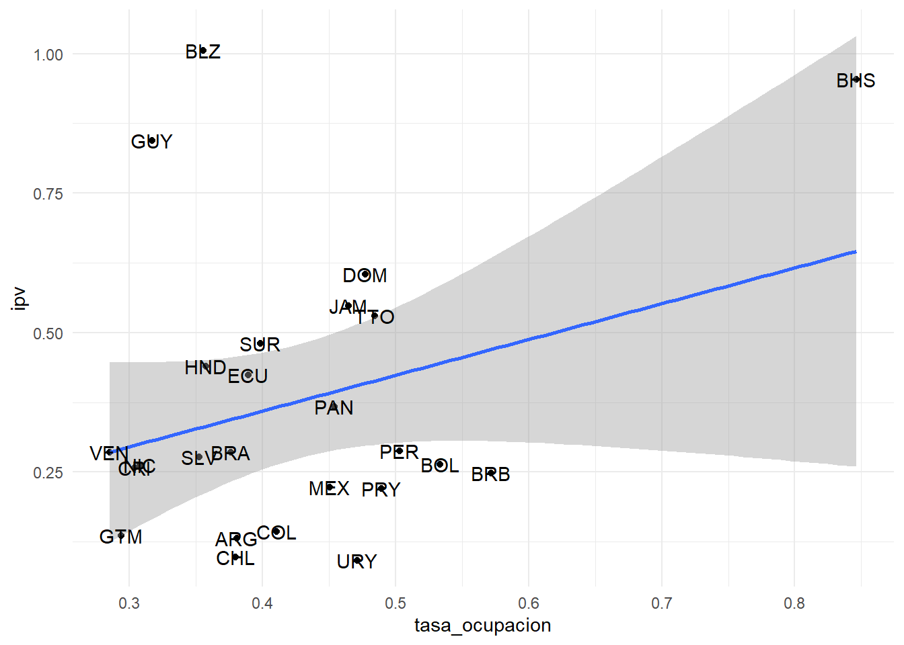
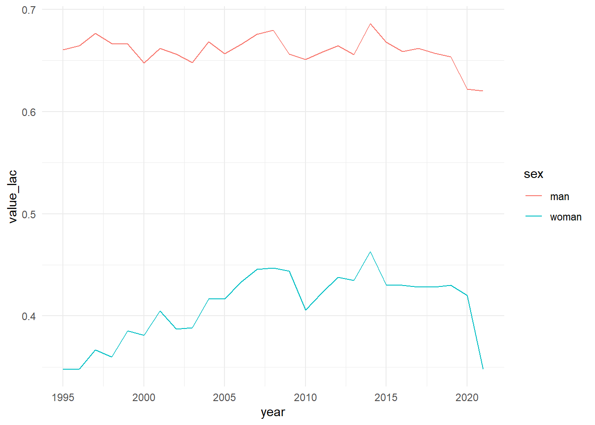
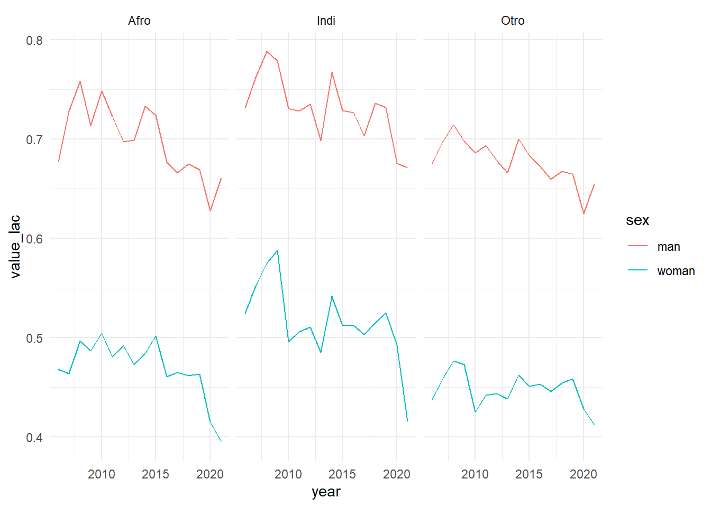
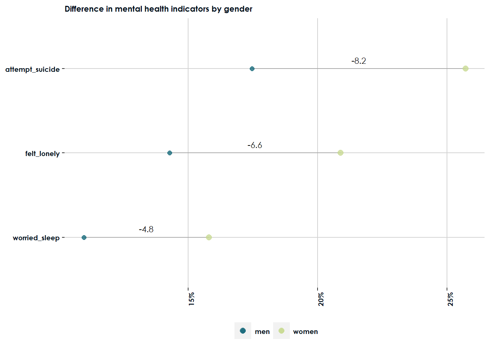
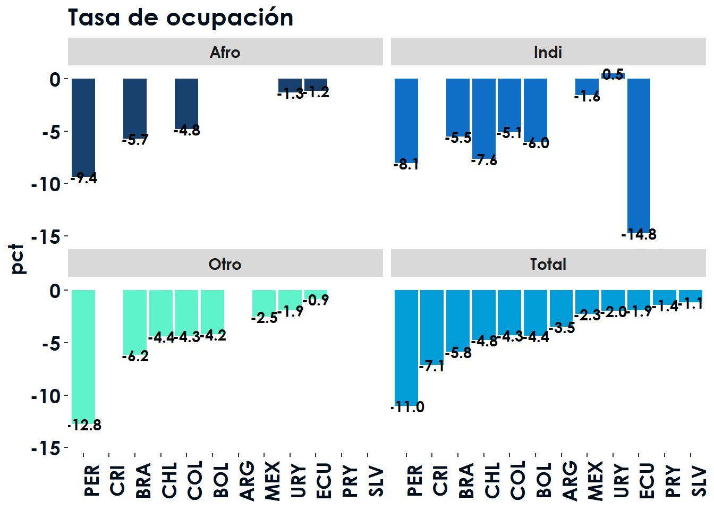

Sección 4 Visualización de datos
La visualización de datos es una parte muy importante del análisis de estos.
Para múltiples gráficos podemos utilizar la librería de funciones para gráficas del Tidyverse.
Esta libraría se llama ggplot2 que ya se cargó como parte de nuestros paquetes tidyverse.
Aquí les dejo la cheatsheet y una página súper útil de distintos gráficos.
Para esta serie de ejercicios vamos a cargar nuestro paquete de indicadores y aprovecharlo para graficar series. Esto se hace con library(idbsocialdataR) si ya lo tienes instalado.
Si no lo tienes instalado puedes correr devtools::install_github("EL-BID/idbsocialdataR", force = TRUE) aunque esto tomará un minuto aproximadamente.
library(idbsocialdataR)En ggplot2 empezamos siempre con la instrucción ggplot() en la que especificamos la base de datos que vamos a utilizar. De ahí seguimos añadiendo distintas capas (+) como pueden ser el tipo de gráfica, o los labels, etc. con lo que iremos construyendo nuestra gráfica. las distintas capas van a tener asociado un aes() que es dónde definimos las variables que queremos gráfica y el atributo de la gráfica al que queremos asignarlas.
Dentro del paquete de ggplot2 tenemos distintos tipos de gráficos básicos como geom_point(), geom_line(), geom_bar(), geom_boxplot() que pueden utilizar para generar prácticamente todas las gráficas que se les ocurran.
Empecemos haciendo una query de los datos de mercados de tasa de ocupacion para la región de nuestro paquete de indicadores. Con esto podemos graficar rápidamente la diferencia entre las tasas de ocupación entre hombres y mujeres.
tasa_ocupacion <- idbsocialdataR::query_indicator(indicator = 'tasa_ocupacion',
categories = 'sex,ethnicity')ggplot(tasa_ocupacion %>%
filter(ethnicity == "Total") %>%
group_by(isoalpha3, sex, ethnicity) %>%
slice(which.max(year))) +
geom_point(aes(x = isoalpha3, y = value, color = sex)) +
theme(axis.text.x = element_text(angle = 90))
El mapeo de las propiedades estéticas depende del tipo de variable. Las variables discretas (sexo, región, país).
| aes | Discreta | Continua |
|---|---|---|
Color (color) |
Arcoiris de colores | Gradiente de colores |
Tamaño (size) |
Escala discreta de tamaños | Mapeo lineal entre el área y el valor |
Forma (shape) |
Distintas formas | No aplica |
Transparencia (alpha) |
No aplica | Mapeo lineal a la transparencia |
Las gráficas también pueden ser utilices para mostrarnos relaciones. Por ejemplo podemos ver la relación entre violencia de género y tasa de ocupación femenina.
base_ipv <- muerte_ipv %>%
group_by(isoalpha3, sex) %>%
slice(which.max(year)) %>%
mutate(ipv = value*100) %>%
select(isoalpha3, ipv, sex)
base_part <- tasa_ocupacion %>%
group_by(ethnicity, sex, isoalpha3) %>%
slice(which.max(year)) %>%
select(-year) %>%
filter(ethnicity == "Total") %>%
mutate(tasa_ocupacion = value) %>%
select(isoalpha3, tasa_ocupacion) %>%
left_join(base_ipv) %>%
filter(sex == "woman")
ggplot(base_part, aes(tasa_ocupacion, ipv)) +
geom_point() +
geom_smooth(method = "lm") +
theme_minimal() +
geom_text(aes(tasa_ocupacion, ipv, label = isoalpha3))
En este caso la relación no parece muy consistente con lo que nos diría la teoria, pero también es útil para ver que parece no haber una relación en este caso.
La librería ggplot también es útil para analizar tendencias en distintos indicadores. Hagamos un ejemplo con como ha evolucionado la tasa de ocupacion en la región.
ggplot(tasa_ocupacion %>%
filter(ethnicity == "Total") %>%
group_by(sex, year) %>%
summarise(value_lac = mean(value))) +
geom_line(aes(x = year, y = value_lac, color = sex)) +
theme_minimal()
Podemos tratar de identificar patrones por grupos de población y para esto puede ser útil utilizar paneles, que se puede añadir como una capa a la gráfica con facet_grid() o facet_warp().
ggplot(tasa_ocupacion %>%
group_by(sex, year, ethnicity) %>%
summarise(value_lac = mean(value)) %>%
filter(ethnicity != "Total" & sex != "Total")) +
geom_line(aes(x = year, y = value_lac, color = sex)) +
theme_minimal() +
facet_wrap(~ethnicity) 
También se puede hacer más bonita la gráfica arreglando los colores, tipo de letra y distintos aes(). Por ejemplo utilicemos la base resultante del ejercicio 3
library(extrafont)
colors_sex <- colors_sex <- c('#176A7B', '#C8DA92')
mental_indicators_diff %>%
ggplot() +
geom_segment(aes(x = fct_reorder(indicator, women), xend=fct_reorder(indicator, women), y=men, yend = women), color = "dark grey") +
geom_point(aes(x=indicator, y=men, color = "men"), size=2, alpha = .8) +
geom_text(data = mental_indicators_diff,
aes(x=indicator, y=gap_pos, label=scales::comma(diff,accuracy = .1)),
family = 'Century Gothic',
nudge_x = .1,
size = 3) +
geom_point(aes(x=indicator, y=women, color = "women"), size=2.5, alpha = .8) +
labs(title = "Difference in mental health indicators by gender") +
theme(legend.position="bottom",
axis.title.y = element_blank(),
axis.title.x = element_blank(),
legend.title=element_blank(),panel.background = element_blank(),
axis.text.x = element_text(angle = 90),
axis.text = element_text(size = 7, color = "#000f1c", face = "bold", family = 'Century Gothic'),
legend.text = element_text(size = 7, color = "#000f1c", face = "bold", family = 'Century Gothic'),
panel.grid.major = element_line(colour = "#D3D3D3"),
text = element_text(size = 7, color = "#000f1c", face = "bold", family = 'Century Gothic')) +
scale_color_manual(values = colors_sex) +
scale_y_continuous(labels = scales::percent_format(accuracy = 1)) +
coord_flip()
Ejercicio final (10 minutos): usando lo que aprendimos calcula y grafica cual fue el país que tuvo una caída más grande en la tasa de participación femenina de 2019 a 2020. También determina si esto cambia por etnicidad.
Tip 1: Toma en cuenta que la última encuesta de CHL y México antes de 2020 fue 2017 y 2018, respectivamente.
Tip 2: la función lag() encuentra el valor inmediato anterior (no es la única forma de hacerlo).
